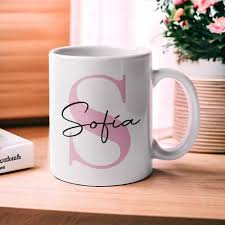
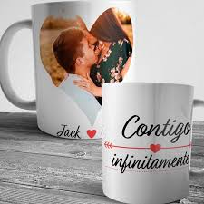
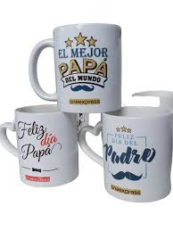
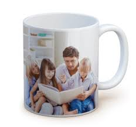

Las tazas sublimadas son una excelente opción para personalizar regalos, promocionar marcas o simplemente disfrutar de tu bebida favorita con estilo. Gracias a la técnica de sublimación, se pueden imprimir diseños duraderos y de alta calidad sobre cerámica.
En Sublimación y Más nos especializamos en la creación de productos personalizados con amor y dedicación. Nuestro enfoque está en ofrecer calidad, creatividad y atención a cada detalle. Ya sea para un regalo especial, para tu empresa o para uso personal, ¡tenemos la taza perfecta para ti!



